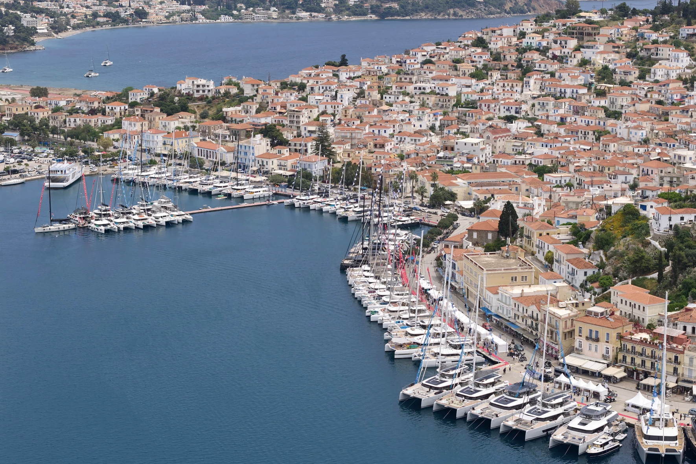
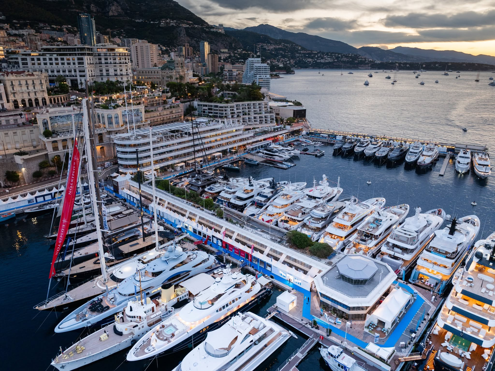
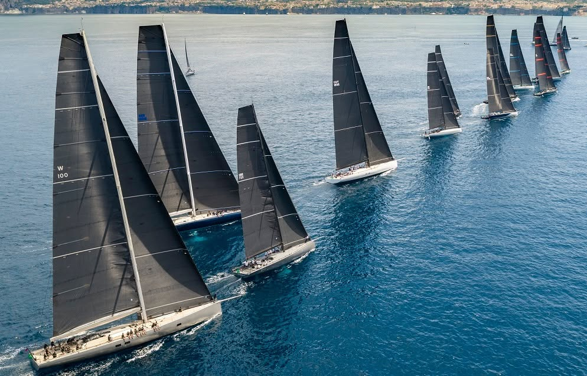
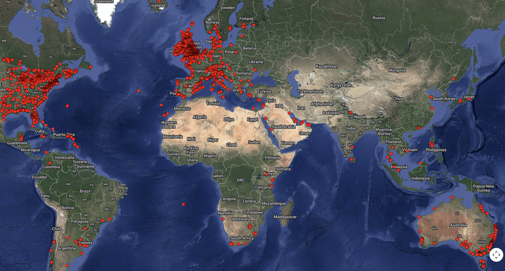
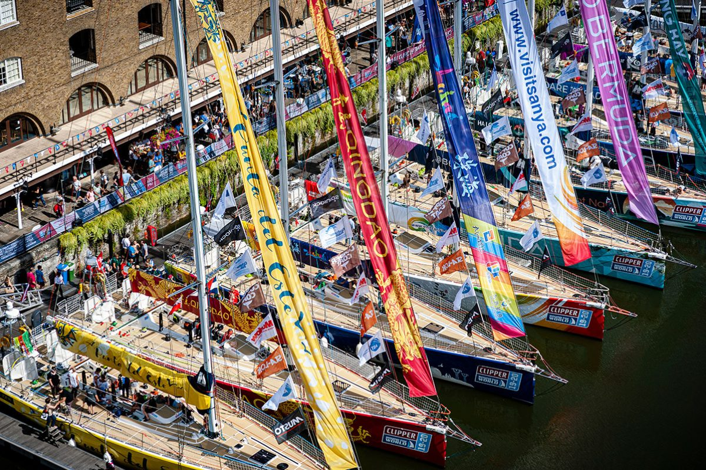
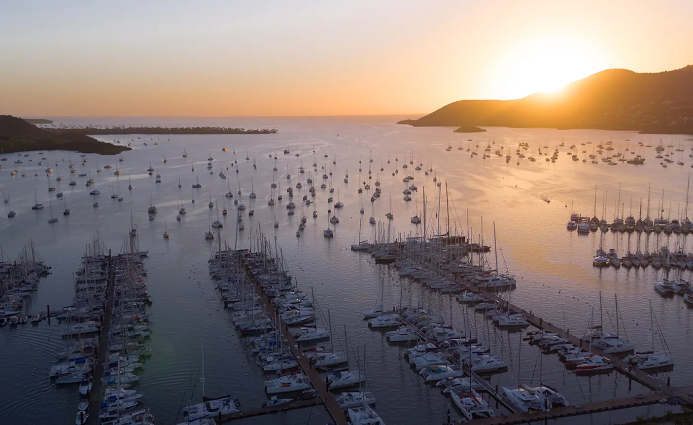
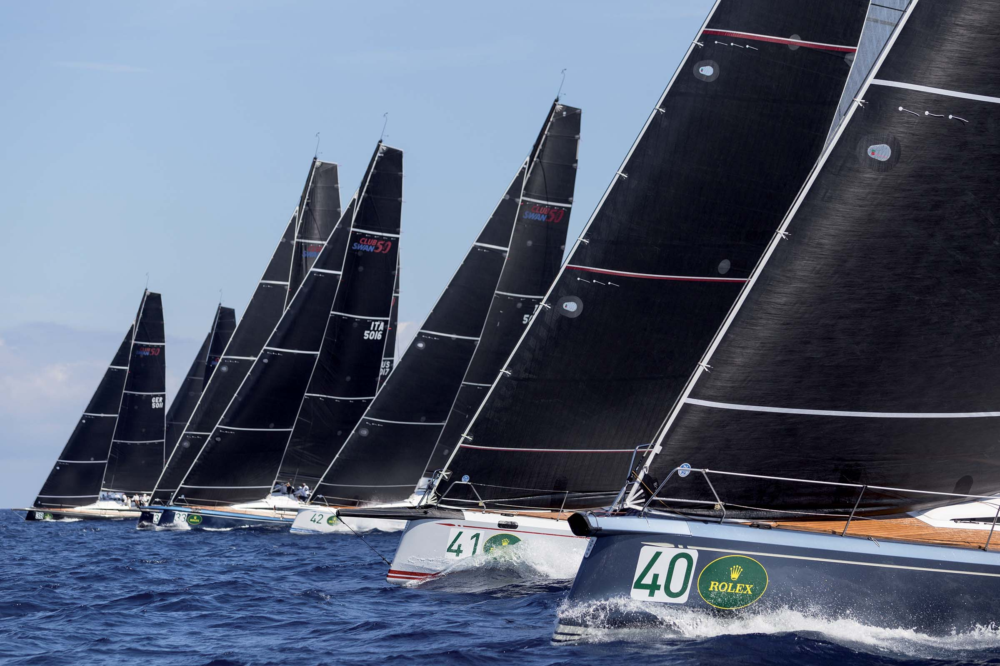

The SOMABAY Yacht Club is the Red Sea's defining sailing address — a permanent, exclusive community co-founded and operated by Red Sea Sails, bringing together world-class events, luxury charters, professional education, and premium marina services under one prestigious roof.
01
The Club
A members-only sailing institution at SOMABAY — a prestigious Red Sea address with a curated community of Egyptian and international yacht owners, sailors, and luxury guests.
02
The Platform
Every activity — events, charters, school, berth management, and the winter program — operates as a revenue-generating pillar beneath the Yacht Club umbrella.
03
The Legacy
A landmark that elevates SOMABAY's brand, drives real estate value, and positions the Red Sea as a world-class international yachting destination.
SOMABAY YACHT CLUB · 2026
From the Water at SOMABAY
Before the Proposal, There Was the Festival.
SOMABAY Sailing Festival · May 2026
Red Sea Sails · On Location at SOMABAY
The Peninsula
11km of Red Sea coastline. Sea on every side, built to sail.
SOMABAY YACHT CLUB · 2026
02 · The Opportunity
Why SOMABAY. Why Now.
01
Marina Opening Moment
SOMABAY's new marina is the perfect launchpad. Establishing the Yacht Club at opening sets the tone from day one — not as an afterthought, but as its defining feature and identity.
02
An Uncontested Space
There is no established, premium yacht club on the Egyptian Red Sea coast. The SOMABAY Yacht Club would be the first of its kind — a true first-mover position in a high-value market.
03
SOMABAY's Natural Positioning
As Egypt's most distinguished luxury resort community, SOMABAY already attracts the exact clientele a yacht club commands. The infrastructure and the audience are both in place.
04
The Mediterranean Window
The Red Sea season runs October through April — precisely when Europe closes. Every winter, thousands of luxury yachts and charter fleets seek a destination. SOMABAY becomes their answer.
35,000+
Sailing Yachts in the Med
Greece, Croatia, and Turkey alone — all looking for a winter home each October.
Oct–Apr
The Red Sea Season
Year-round temperate conditions — no comparable winter sailing destination at this standard.
First
Mover Advantage
No established yacht club exists on the Egyptian Red Sea. SOMABAY claims that position now or cedes it to someone else.
The Global Industry — Why the Fleet Moves
$8.35B
Global Yacht Charter Market · 2024
Growing at 5.2% CAGR to 2030. Europe holds 44% of global revenue.
96%
Med Summer Concentration
Bookings concentrate Jul–Aug. The fleet has nowhere to go Oct–Apr.
22%
Rise in Asian Clientele · 2024
New HNW audiences seeking destinations beyond established Med routes.
Sources: Grand View Research · Mordor Intelligence · 360 Research Reports · 2024–2025. In 2025, Egypt opened its waters to foreign-flagged leisure yachts for the first time — described across the industry as a transformative moment. The door is open; the question is who walks through it first.
Sailing Season — Mediterranean vs Red Sea
J
F
M
A
M
J
J
A
S
O
N
D
Mediterranean
Red Sea
Peak seasonOpen / shoulderClosed
The Red Sea peaks precisely when the Mediterranean closes. Red Sea conditions: 20–25°C winter air, 22–30°C year-round water. Sources: FX Yachting · NAU Yachts · Frontier Yachting · 2025–2026.
SOMABAY YACHT CLUB · 2026
03 · The Operator
Red Sea Sails — 11 Years of Proven Excellence
11
Years of Operations
10+
Major Events 2022–2025
3
Strategic Partners
HNW
Network Access
RSS brings what cannot be built overnight — eleven years of relationships, reputation, and operational infrastructure in Egypt's sailing world. The SOMABAY Yacht Club launches with instant credibility.
SOMABAY provides the stage. RSS brings the performance.
Operational Track Record
Organizer of the Red Sea Sailing Regatta, El Gouna Sailing Festival, and ETA Cup Series — Egypt's most prestigious sailing events — 23 regattas delivered on the Red Sea since 2022.
Club Operations & Event Production
Day-to-day Yacht Club management, member services, sailing programming, and full execution of regattas, festivals, and racing series under the club's annual calendar.
Charter, School & Berth Management
Fleet operations, booking, crew management, sailing school curriculum, and specialist management of the sailing yacht section of the marina.
Elite Network & Strategic Partners
Direct relationships with Egyptian and international HNW yacht owners. Felix Maritime (since 1983) and FX Yachting (Greece) — together an unmatched pipeline of international vessels, clients, and brokers. Leadership backed by founders from Egypt's finance sector.
490K
Organic Views · May 2026
181K
Accounts Reached
23
Boats · SOMABAY Festival
100%
Organic · Zero Paid Media
SOMABAY YACHT CLUB · 2026
04 · Strategic Partnership · FX Yachting × Red Sea Sails
The Winter Yacht Program — Pipeline, Not Concept
FX Yachting is Greece's leading luxury catamaran charter operator — two decades of delivering world-class sailing experiences to Europe's most discerning clients. Their CEO Barbara Gabriel brings direct access to a high-net-worth European sailing community actively seeking a Red Sea home base. The partnership is committed. The fleet is ready.
When FX Yachting brings its fleet to SOMABAY, it sends a signal heard across the European sailing world: the Red Sea has arrived as a serious destination.

The Fleet
Luxury sailing catamarans and motor yachts from 45 to 80 feet — the finest vessels from the Greek charter market, repositioned to SOMABAY for the Red Sea winter season each October through April.
The Aloia 80 — Flagship Vessel
An 80ft luxury catamaran with confirmed interest in permanent Red Sea docking at SOMABAY. A tangible, named asset that signals to the broader European market that SOMABAY is open for business.
The Network Effect
FX's client base represents hundreds of high-net-worth European sailors and yacht owners. Their presence at SOMABAY attracts additional vessels, charter guests, and long-term berth holders.
Revenue Across Every Pillar
Marina berth fees. Hotel bookings. Restaurant and outlet spend. Charter commissions. Premium provisioning. The FX winter fleet activates revenue across the entire SOMABAY operation — not just the marina.
Red Sea Sails · Event Track Record
This is what we bring to SOMABAY's waters.
SOMABAY YACHT CLUB · 2026
05 · The Club Model
One Club. Every Maritime Guest.
Sailing at its core — prestigious enough to welcome the wider maritime world.
SOMABAY YACHT CLUB
The Umbrella · The Brand · The Community
Pillar 01
Events & Regattas
Annual regattas, sailing festivals, and racing series. Media-generating, sponsor-attracting events that put SOMABAY on the international sailing map and drive hotel occupancy.
Pillar 02
Luxury Charter Operations
Premium fleet of 40–60ft monohulls and catamarans. Full-day and multi-day charters for resort guests, residents, and international visitors seeking Red Sea experiences.
Pillar 03
Sailing School
Professional sailing education for all ages — hotel guests, residents, school groups, and competitive sailors. Builds a long-term community of sailors anchored at SOMABAY.
Pillar 04
Sailing Yacht Berth Management
RSS manages the sailing yacht section of the marina — berths, crew support, provisioning, and concierge services dedicated to sailing vessels. Broader marina operations remain with SOMABAY.
+ FX–RSS Winter Yacht Program · October through April · Red Sea SeasonEUROPEAN FLEET · HNW CHARTER GUESTS
Beyond Sailing
Motoryacht & Charter Guests
The Yacht Club's prestige naturally welcomes motoryacht owners and luxury charter guests. A prestigious club address is a destination signal the global maritime community recognises.
Superyacht Guests Ashore
When a superyacht calls at SOMABAY, the Yacht Club hosts owners and guests ashore — the social calendar, the dining, the events, the address. We speak their language and match their standard.
Felix Maritime — Technical Backbone
The Yacht Club hosts. Felix Maritime (since 1983) services the vessel. Together, SOMABAY can receive and retain the most demanding maritime guests with complete confidence.
The Red Sea Experience
Life aboard the Red Sea. This is what we're building.
SOMABAY YACHT CLUB · 2026
06 · Revenue & Clientele
Who It Attracts. What It Generates.
The Clientele
Egyptian HNW Yacht Owners
A growing class of high-net-worth individuals seeking a prestigious Red Sea home for their vessels. The Yacht Club gives them a community, a berth, and an identity — none of which currently exist on this coast.
International Sailing Community
European and global yacht owners seeking a winter destination. Through FX Yachting's network and RSS's international relationships, the club has an immediate pipeline of international vessels and owners.
Resort Guests & Property Investors
SOMABAY guests seeking bespoke on-water experiences, and investors drawn by the proven global link between yacht club addresses and premium real estate values.
Revenue Streams
Reading These Figures
The figures below are steady-state estimates — what each pillar contributes annually once the club is established and the Winter Yacht Program has scaled to full capacity (50–70 wintering yachts), consistent with the economic model that follows. Year one is a fraction of these numbers; each stream ramps over three to four seasons as the fleet grows, membership matures, and the events calendar fills. We're showing the destination at maturity — conservatively — not the opening season.
Marina Berth Fees
Annual and seasonal berth revenue from permanent yacht owners and transient vessels — consistent, recurring income independent of hotel occupancy cycles.
At maturity · annual$120–300K
Hotel & F&B Spend
Yacht owners, crew, and charter guests are among the highest-spending hospitality guests. Their marina presence directly drives hotel bookings, restaurant covers, and outlet revenue.
At maturity · annual$250–700K
Club Membership
Annual membership subscriptions from the Yacht Club community. Tiered membership creates a prestige hierarchy while generating a reliable and recurring income stream.
At maturity · annual$150–250K
Charter Revenue
Day and multi-day charters generate direct revenue through agreed commercial arrangements and referral structures between RSS and SOMABAY.
At maturity · annual$200–500K
Events & Sponsorship
Regattas and sailing festivals attract national and international brand sponsors. SOMABAY's name reaches sailing audiences across Egypt, Europe, and the Gulf.
At maturity · annual$300–500K
Real Estate Value
Yacht clubs are proven real estate value drivers worldwide. The SOMABAY Yacht Club positions the development as a sailing lifestyle community — supporting premium property pricing.
Pricing premium+5–15%
At-maturity annual estimates for core Club operations at steady state. The Winter Yacht Program is additional to these figures — its phased economics follow in Section 07, reaching $1.05–2.85M annually at full scale. Year one is a fraction of these figures; the ramp follows fleet growth and marina capacity over three to four seasons. Conservative low–high ranges.
SOMABAY YACHT CLUB · 2026
07 · The Winter Yacht Program · The Numbers
When the Med closes, SOMABAY opens.
Every October, thousands of Mediterranean yachts look for a warm-water winter home. The Caribbean takes most. The Red Sea is the natural alternative — closer, more interesting, and now open to foreign-flagged vessels. A phased programme: conservative in year one, scaling as infrastructure and reputation grow together. SOMABAY serves as the fleet’s winter home port — yachts sail out for regattas along the coast and return to base, keeping the berths, the crews, and the spend at SOMABAY.
~15,000
Charter Vessels in Europe
Greece alone runs 5,600+ charter boats — the closest major fleet to the Red Sea. Croatia adds 4,378 more. 70%+ of the global fleet sits in the Med at peak, idle from October.
Oct–Apr
The Med Pause
96% of Med bookings fall in summer. The fleet needs a winter home.
<1%
Capture at Full Scale
Even the full programme needs under 1% of the European fleet.
Phase One · 2026–2027
10–15
Yachts
Proof of Concept
First international yachts wintering at SOMABAY. FX Yachting pipeline as primary source. Curated, not broadcast.
Berth Revenue~$50–135K
Crew & Owner Spend~$125–375K
SeasonNov–Apr · 5 mo (arrivals from late Oct)
Phase Two · 2027–2028
20–30
Yachts
Growing the Programme
Word of mouth from phase one. Wider FX network. RSS international outreach. First European sailing press visit.
Berth Revenue~$120–325K
Crew & Owner Spend~$300–900K
SeasonOct–Apr · 6 mo
Phase Three · 2029 +
50–70
Yachts
Full Scale
Full marina capacity enables the complete vision. SOMABAY established on international sailing itineraries.
Berth Revenue~$300–755K
Crew & Owner Spend~$750K–2.1M
SeasonOct–Apr · 6 mo
Total Economic Contribution — Per Winter Season
Direct contribution to SOMABAY each season — bars span the low-to-high scenario range.
Phase 1 · 2026–27 · 10–15 yachts~$175–510K
Phase 2 · 2027–28 · 20–30 yachts~$420K–1.2M
Phase 3 · 2029 + · 50–70 yachts~$1.05–2.85M
$0$1M$2M$3M
The Numbers — Season by Season
Estimated direct economic contribution to SOMABAY per winter season. Ranges reflect low and high scenarios.
Phase 1 · 2026–27
Phase 2 · 2027–28
Phase 3 · 2029 +
Wintering yachts
10–15
20–30
50–70
Season length
5 months
6 months
6 months
Berth revenue
~$50–135K
~$120–325K
~$300–755K
Crew & owner spend
~$125–375K
~$300–900K
~$750K–2.1M
Total per season
~$175–510K
~$420K–1.2M
~$1.05–2.85M
Assumptions: berth fee $1,000–1,800/yacht/month · blended crew & owner spend ashore $2,500–5,000/yacht/month. Full-scale phase contingent on marina capacity. Sources: Grand View Research · 360 Research Reports · Yachttrading · Yachtpedia · Lengers Yachts · 2024–2026.
SOMABAY YACHT CLUB · 2026
07 · The Winter Yacht Program · Benchmarked
Our assumptions, priced against the world.
The winter fleet: 60–80ft catamarans through FX Yachting, with the bulk in 35–50ft monohulls. The model assumes $1,000–1,800 per yacht per month — below is what comparable berths cost across the Mediterranean and the Gulf.
Market
35–50ft Monohull · /mo
60–80ft Catamaran · /mo
Basis
Türkiye · Marmaris & Göcek
$1,000–2,950
$1,750–4,750
Wet berth at €3–6 per metre per day — the Med's value tier
Peak €150–500+/night for 12–20m; winter ≈ half of summer, long-term −20–30%
Dubai Marina
$680–3,400 (by vessel size)
AED 30,000–150,000 per year
Dubai Harbour · new build
from ~$1,810 · prime peak $2,700+
Annual from AED 80,000 mid-size · peak season runs Nov–Apr
SOMABAY · model assumption
$1,000–1,800 per yacht per month — above the value tier, below premium winter rates
The Same Window
The Gulf's peak marina season is November–April — the region's premium marinas price highest in exactly the months SOMABAY sells.
Catamaran Upside
Wide-beam vessels carry a documented berth premium (~+40% in the French survey). 15 of the 30 dedicated berths are catamaran berths — upside not fully modeled.
Conservative by Design
The model prices SOMABAY as a value-competitive winter home at a world-class standard — not a discount play, and not a stretch.
Sources: Voiles et Voiliers 32-port French Mediterranean survey (2021) · Marmaris/Göcek wet-berth market rates (2026) · Dubai marina market data (2025–26). Long-term contracts typically discount 10–20% vs monthly rates. USD conversions approximate.
The Winter Fleet
A warm-water home when Europe closes.
SOMABAY YACHT CLUB · 2026
08 · The Global Network
A Yacht Club That Opens Doors.
Yacht clubs are not just facilities — they are networks. A recognised SOMABAY Yacht Club, with the right affiliations, places SOMABAY on itineraries it currently doesn't appear on, and opens access to events, fleets, and audiences no marketing budget can buy.

Sister Clubs · Mediterranean
Reciprocal membership with clubs in Greece, Croatia, Malta, and Cyprus. Their members visit SOMABAY; ours sail their waters. Events travel both ways.

Regional Circuit · Gulf
Dubai, Muscat, Abu Dhabi. A Red Sea–Gulf circuit with SOMABAY as the Egyptian anchor — a natural winter triangle for Gulf-based owners.

Event Exchange · Regatta
Sister clubs bring their events here; SOMABAY's regattas travel to their waters. A compounding calendar that builds audience and fleet year on year.
The global sailing world is a relationship network. A SOMABAY Yacht Club, properly affiliated, holds a seat at a table most Red Sea destinations never reach — and it can start building toward it now.
SOMABAY YACHT CLUB · 2026
09 · 2026 Launch Roadmap
A Phased Path to Full Club Operations
Mar 2026 · Delivered ✓
Branded Sailing Activation
First branded sailing presence at SOMABAY — proof of concept delivered, with visibility across key stakeholders and guests.
May 14–16 · Delivered ✓
SOMABAY Sailing Festival
15 cruising yachts and a Federation youth fleet — 23 boats and 150+ participants in total. Sailing village, VIPs, and 490K organic views in May alone.
Q3 2026
Charter & School Launch
Charter operations begin. Sailing school Phase 1 opens for hotel guests, residents, and students.
Oct 2026
Marina Grand Opening
Celebratory regatta. 20 international brokers. VIP showcase. Official Yacht Club launch event.
Q4 2026
Yacht Club Launch
Full club structure, membership programme, and winter yacht program fully operational.
Beyond Launch — The Direction of Travel
Once the club is live, the winter programme scales in conservative phases — both tracks reinforcing each other as marina capacity and reputation grow together.
2026
Open the Door
Sailing festival delivered · club established · winter pilot of 10–15 yachts. Show what's possible.
2027
Programme Growing
Multiple events · FX fleet integrated · Gulf owners invited · European press. Winter at 20–30 yachts.
2028
Recognition
International media · broker programme · sister-club outreach · World Sailing recognition application.
2029 +
At Scale
Full marina capacity unlocks the winter series at 50–70 yachts · SOMABAY a named international sailing address.
Forward years are directional, not fixed commitments — pace follows marina capacity and shared decisions.
SOMABAY YACHT CLUB · 2026
10 · Beyond the Horizon
Where This Goes With the Right Partner.
Consistent delivery opens doors most Red Sea destinations never reach. These are the conversations the partnership puts on the table.

Global Ocean Race
Clipper Round the World Race
Stopover port · global broadcast · ocean racers at SOMABAY · destination marketing at scale.

World Sailing
World Sailing Recognised Event
A historic first for the Red Sea · SOMABAY alongside Sydney, Palma, Kiel · RSS leads the application.

International Circuit
ORC · Swan Cup · Superyacht Series
Named circuit stop · returning fleet every year · same owners, same guests, compounding value.
The roadmap is the application. By 2029, SOMABAY holds a hand worth playing — and that conversation needs strategy, and the right partner at the table.
The SOMABAY Experience
The destination is ready. The partnership begins now.
SOMABAY YACHT CLUB · 2026
11 · The Partnership Ask
A Partnership Built on Clear Commitments
A modest, concrete start — then a phased set of commitments that grow with the club.
What We're Asking — To Begin
Immediate · 2026
A low-friction start that lets us stand up operations now — while the permanent marina and clubhouse are built.
01
Operations Base & Temporary Clubhouse
A space within SOMABAY for club operations, a prefab/container as a temporary clubhouse — used while we set up and the permanent structure is built.
02
Docking for the Base
Docking space at the marina to operate and provide exposure while we prepare for the season.
03
Berths from September / October
Several berths from the start of the autumn season for the yachts we bring to SOMABAY — both locally-owned vessels and the FX Winter Program fleet.
04
Co-Branding & Naming
Joint branding of the SOMABAY Yacht Club — establishing it as a permanent SOMABAY institution co-founded with Red Sea Sails.
As We Scale
05
Permanent Clubhouse & Beach
A dedicated permanent home for the club within the completed marina, with a club beach amenity for members and guests.
06
Expanding Berth Allocation
A growing allocation of sailing yacht berths as the winter fleet and resident community scale — building to 30 dedicated sailing berths (15 catamaran, 15 monohull) at marina completion, managed by RSS under the Club.
07
Event Support
SOMABAY's active participation in hosting events: accommodation, F&B access, venue support, local permissions, and marketing amplification.
08
Commercial Framework
A mutually beneficial agreement covering revenue sharing, berth fee structures, charter referrals, and school operations — to be defined together.
09
Strategic Commitment
A long-term partnership framing — not a seasonal arrangement. The SOMABAY Yacht Club is a permanent institution, and we are committed to building it as one.
SOMABAY YACHT CLUB · 2026
Next Steps
Let's Build Something Unprecedented Together
The SOMABAY Yacht Club is a first-of-its-kind institution for the Egyptian Red Sea. Red Sea Sails brings the operational expertise, the network, and eleven years of earned credibility. SOMABAY brings the world-class destination. Together, we create something neither could build alone.
Proposed Next Step
The conversation has already started
We've met. We've aligned on the vision. The next step is simple — let's sit together, define the framework, and set this in motion.